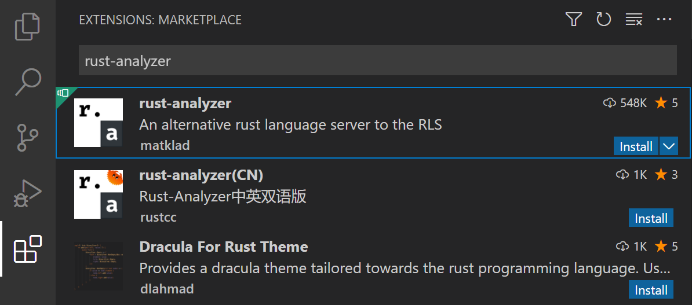
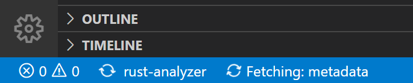
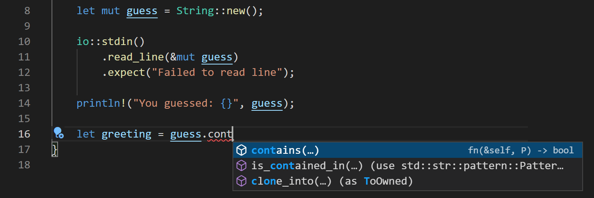
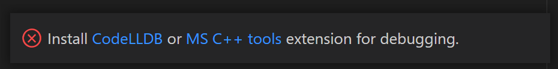
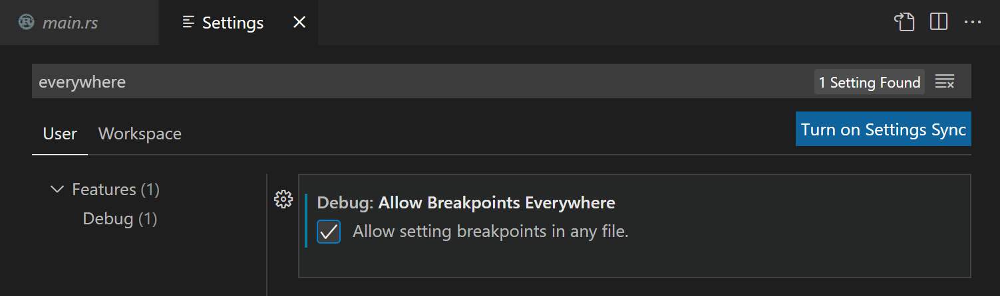
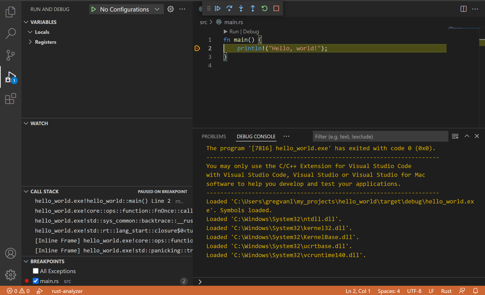

Rust in Visual Studio Code
Rust is a powerful programming language, often used for systems programming where performance and correctness are high priorities. If you are new to Rust and want to learn more, The Rust Programming Language online book is a great place to start. This topic goes into detail about setting up and using Rust within Visual Studio Code, with the rust-analyzer extension.

Note: There is also another popular Rust extension in the VS Code Marketplace (extension ID: rust-lang.rust) but this extension is deprecated and rust-analyzer is the recommended VS Code Rust extension by rust-lang.org.
Installation
1. Install Rust
First you will need to have the Rust toolset installed on your machine. Rust is installed via the rustup installer, which supports installation on Windows, macOS, and Linux. Follow the rustup installation guidance for your platform, taking care to install any extra tools required to build and run Rust programs.
Note: As with installing any new toolset on your machine, you'll want to make sure to restart your terminal/Command Prompt and VS Code instances to use the updated toolset location in your platform's PATH variable.
2. Install the rust-analyzer extension
You can find and install the rust-analyzer extension from within VS Code via the Extensions view (X (Windows, Linux Ctrl+Shift+X)) and searching for 'rust-analyzer'. You should install the Release Version.

We'll discuss many of rust-analyzer features in this topic but you can also refer to the extension's documentation at https://rust-analyzer.github.io.
Check your installation
After installing Rust, you can check that everything is installed correctly by opening a new terminal/Command Prompt, and typing:
rustc --version
which will output the version of the Rust compiler. If you want more details, you can add the --verbose argument. If you run into problems, you can consult the Rust installation guide.
You can keep your Rust installation up to date with the latest version by running:
rustup update
There are new stable versions of Rust published every 6 weeks so this is a good habit.
Local Rust documentation
When you install Rust, you also get the full Rust documentation set locally installed on your machine, which you can review by typing rustup doc. The Rust documentation, including The Rust Programming Language and The Cargo Book, will open in your local browser so you can continue your Rust journey while offline.
Hello World
Cargo
When you install Rust with rustup, the toolset includes the rustc compiler, the rustfmt source code formatter, and the clippy Rust linter. You also get Cargo, the Rust package manager, to help download Rust dependencies and build and run Rust programs. You'll find that you end up using cargo for just about everything when working with Rust.
Cargo new
A good way to create your first Rust program is to use Cargo to scaffold a new project by typing cargo new. This will create a simple Hello World program along with a default Cargo.toml dependency file. You pass cargo new the folder where you'd like to create the project.
Let's create Hello World. Navigate to a folder where you'd like to create your project and type:
cargo new hello_world
To open your new project in VS Code, navigate into the new folder and launch VS Code via code .:
cd hello_world
code .
Note: Enable Workspace Trust for the new folder as you are the author. You can enable Workspace Trust for your entire project folder parent to avoid being prompted when you create new projects by checking the option to Trust the authors of all the files in parent folder 'my_projects`.
cargo new creates a simple Hello World project with a main.rs source code file and Cargo.toml Cargo manifest file.
src\
main.rs
.gitignore
Cargo.toml
main.rs has the program's entry function main() and prints "Hello, world!" to the console using println!.
fn main() {
println!("Hello, world!");
}
This simple Hello World program doesn't have any dependencies but you would add Rust package (crate) references under [dependencies].
Cargo build
Cargo can be used to build your Rust project. Open a new VS Code integrated terminal (` (Windows, Linux Ctrl+Shift+`)) and type cargo build.
cargo build

You will now have target\debug folder with build output include an executable called hello_world.exe.
Running Hello World
Cargo can also be used to run your Rust project via cargo run.
cargo run
You can also run hello_world.exe manually in the terminal by typing .\target\debug\hello_world.

IntelliSense
IntelliSense features are provided by the Rust language server, rust-analyzer, which provides detailed code information and smart suggestions.
When you first open a Rust project, you can watch rust-analyzer's progress in the lower left of the Status bar. You want to wait until rust-analyzer has completely reviewed your project to get the full power of the language server.

Inlay hints
One of the first things you may notice is rust-analyzer providing inlay hints to show inferred types, return values, named parameters in light text in the editor.

While inlay hints can be helpful for understanding your code, you can also disable the feature via the Editor > Inlay Hints: Enabled setting (editor.inlayHints.enabled) or use the Rust Analyzer: Toggle Inlay Hints command to hide or display this extra information.
Hover information
Hovering on any variable, function, type, or keyword will give you information on that item such as documentation, signature, etc. You can also jump to the type definition in your own code or the standard Rust libraries.

Auto completions
As you type in a Rust file, IntelliSense provides you with suggested completions and parameter hints.

Tip: Use Space (Windows, Linux Ctrl+Space) to trigger the suggestions manually.
Semantic syntax highlighting
rust-analyzer is able to use semantic syntax highlighting and styling due to its rich understanding of a project source code. For example, you may have noticed that mutable variables are underlined in the editor.

Being able to quickly tell which Rust variables are mutable or not can help your understanding of source code, but you can also change the styling with VS Code editor.semanticTokenColorCustomizations setting in your user settings.
In settings.json, you would add:
{
"editor.semanticTokenColorCustomizations": {
"rules": {
"*.mutable": {
"fontStyle": "", // set to empty string to disable underline, which is the default
},
}
},
}
You can learn more about rust-analyzer's semantic syntax customizations in the Editor features section of the rust-analyzer documentation.
Code navigation
Code navigation features are available in the context menu in the editor.
- Go to Definition F12 - Go to the source code of the type definition.
- Peek Definition F12 (Windows Alt+F12, Linux Ctrl+Shift+F10) - Bring up a Peek window with the type definition.
- Go to References F12 (Windows, Linux Shift+F12) - Show all references for the type.
- Show Call Hierarchy H (Windows, Linux Shift+Alt+H) - Show all calls from or to a function.
You can navigate via symbol search using the Go to Symbol commands from the Command Palette (P (Windows, Linux Ctrl+Shift+P)).
- Go to Symbol in File - O (Windows, Linux Ctrl+Shift+O)
- Go to Symbol in Workspace - T (Windows, Linux Ctrl+T)
Linting
The Rust toolset includes linting, provided by rustc and clippy, to detect issues with your source code.

The rustc linter, enabled by default, detects basic Rust errors, but you can use clippy to get more lints. To enable clippy integration in rust-analyzer, change the Rust-analyzer > Check on Save: Command (rust-analyzer.checkOnSave.command) setting to clippy instead of the default check. The rust-analyzer extension will now run cargo clippy when you save a file and display clippy warnings and errors directly in the editor and Problems view.
Quick Fixes
When the linter finds errors and warnings in your source code, rust-analyzer can often provide suggested Quick Fixes (also called Code Actions), which are available via a light bulb hover in the editor. You can quickly open available Quick Fixes via the . (Windows, Linux Ctrl+.).

Refactoring
Due to rust-analyzer's semantic understanding of your source code, it can also provide smart renames, across your Rust files. With your cursor on a variable, select Rename Symbol from the context menu, Command Palette, or via F2.
The rust-analyzer extension also supports other code refactorings and code generation, which the extension calls Assists.
Here are just a few of the refactorings available:
- Convert if statement to guarded return
- Inline variable
- Extract function
- Add return type
- Add import
Formatting
The Rust toolset includes a formatter, rustfmt, which can format your source code to conform to Rust conventions. You can format your Rust file using F (Windows Shift+Alt+F, Linux Ctrl+Shift+I) or by running the Format Document command from the Command Palette or the context menu in the editor.
You also have the option to run the formatter on each save (Editor: Format On Save) or paste (Format On Paste) to keep your Rust code properly formatted automatically while you are working.
Debugging
The rust-analyzer extension supports debugging Rust from within VS Code.
Install debugging support
To start debugging, you will first need to install one of two language extension with debugging support:
- Microsoft C++ (ms-vscode.cpptools)
- CodeLLDB (vadimcn.vscode-lldb)
If you forget to install one of these extensions, rust-analyzer will provide a notification with links to the VS Code Marketplace when you try to start a debug session.

Using Rust Analyzer: Debug
The rust-analyzer extension has basic debugging support via the Rust Analyzer: Debug command available in the Command Palette (P (Windows, Linux Ctrl+Shift+P)) and the Run|Debug CodeLens in the editor.
Let's debug the Hello World program, we created earlier. First we will set a breakpoint in main.rs.
-
You'll need to enable the setting Debug: Allow Breakpoints Everywhere, which you can find in the Settings editor (, (Windows, Linux Ctrl+,)) by searching on 'everywhere`.

-
Open
main.rsand click the left gutter in the editor to set a break point on theprintln!line. It should display as a red dot.
-
To start debugging, use either the Rust Analyzer: Debug command or select the Debug CodeLens about
main().
Next steps
This has been a brief overview showing the rust-analyzer extension features within VS Code. For more information, see the details provided in the Rust Analyzer extension User Manual, including how to tune specific VS Code editor configurations.
To stay up to date on the latest features/bug fixes for the rust-analyzer extension, see the CHANGELOG. You can also try out new features and fixes by installing the rust-analyzer Pre-Release Version available in the Extensions view Install dropdown.
If you have any issues or feature requests, feel free to log them in the rust-analyzer extension GitHub repo.
If you'd like to learn more about VS Code, try these topics:
- Basic Editing - A quick introduction to the basics of the VS Code editor.
- Install an Extension - Learn about other extensions are available in the Marketplace.
- Code Navigation - Move quickly through your source code.
Common questions
Linker errors
If you see linker errors such as "error: linker link.exe not found" when you try to build your Rust program, you may be missing the necessary C/C++ toolset. Depending on your platform, you will need to install a toolset with a C/C++ linker to combine the Rust compiler output.
Windows
On Windows, you will need to also install Microsoft C++ Build Tools in order to get the C/C++ linker link.exe. Be sure to select the Desktop Development with C++ when running the Visual Studio installer.
Note: You can use the C++ toolset from Visual Studio Build Tools along with Visual Studio Code to compile, build, and verify any codebase as long as you also have a valid Visual Studio license (either Community, Pro, or Enterprise).
macOS
You may need to install the XCode toolset by running xcode-select --install in a terminal.
Linux
You may need to install the GCC toolset via the build-essential package by running sudo apt-get install build-essential in a terminal.
For further troubleshooting advice, refer to the Rust installation guide.